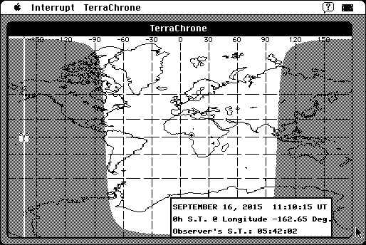

Download
TERRACHRONE_220_68K.zip (352K) TERRACHRONE 2.2.0 repackaged into a zipped hfs disk image and checksum file. The disk image can be mounted with Mini vMac.
TERRACHRONE_220_68K.sea.hqx (549K) TERRACHRONE 2.2.0 in the original format.
copyright: sofTouch APpLications
mod date: Feb 1, 1997
license: shareware
official url :
sofTouch APpLications - TERRACHRONE 2.2.0
"Produces as continually updating graphical representation of daylight and nighttime regions of the Earth projected on a map of the world." Requires System 7. By Glenn Schneider.

If you find these downloads useful, please consider helping the Gryphel Project, which hosts them.
Here are the md5 checksums for the downloads, signed with Gryphel Key 5:
--------- GRY SIGNED TEXT --------- 80fc9fd740f1bc75607e8aba5e839a1e TERRACHRONE_220_68K.zip 2c41eb149fb6b69ed2e67f0934c19fea TERRACHRONE_220_68K.sea.hqx ------- BEGIN GRY SIGNATURE ------- Gry/4Xa8CFcUzxdN/EIOqXbNr+HHJIRTyT3ttXRAj9K7js7DwekT4LAciqNk3MJT R7XFCUHxvWYRRg6UUhbdjBgFK7yc1O1G5TK6/LQDUVNrFdxfEaioLg1rGj7uqXxu xleqhD67GsjpUS85ZDXMqPAmwqO/0NDylTJ+/1m8Y4AzmPQ+9HOQaSMXLgG3GoAJ -------- END GRY SIGNATURE --------